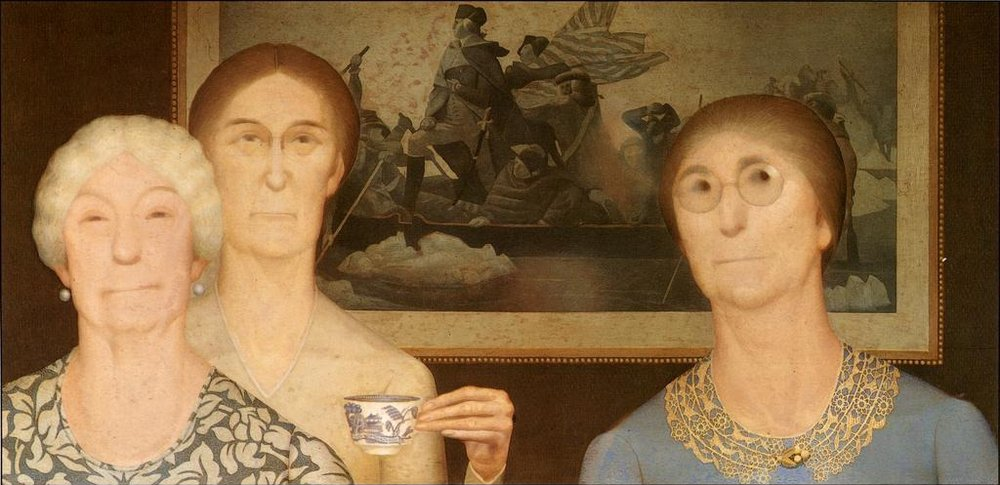

Daughters of Revolution
Grant Wood · 1932 · Oil on Masonite · 50.8 × 101.4 cm · Cincinnati Art Museum
In copyright. Look and learn: shown for study, not for download.
In 1927 Wood was commissioned to make a stained glass window for the Veterans Memorial Coliseum in Cedar Rapids, Iowa. He used glass made in Germany, and the local chapter of the Daughters of the American Revolution complained. Five years later he painted this picture, which he described as his only satire. The models wear his mother's clothing, including a lace collar and an amber pin he had bought for her in Germany.